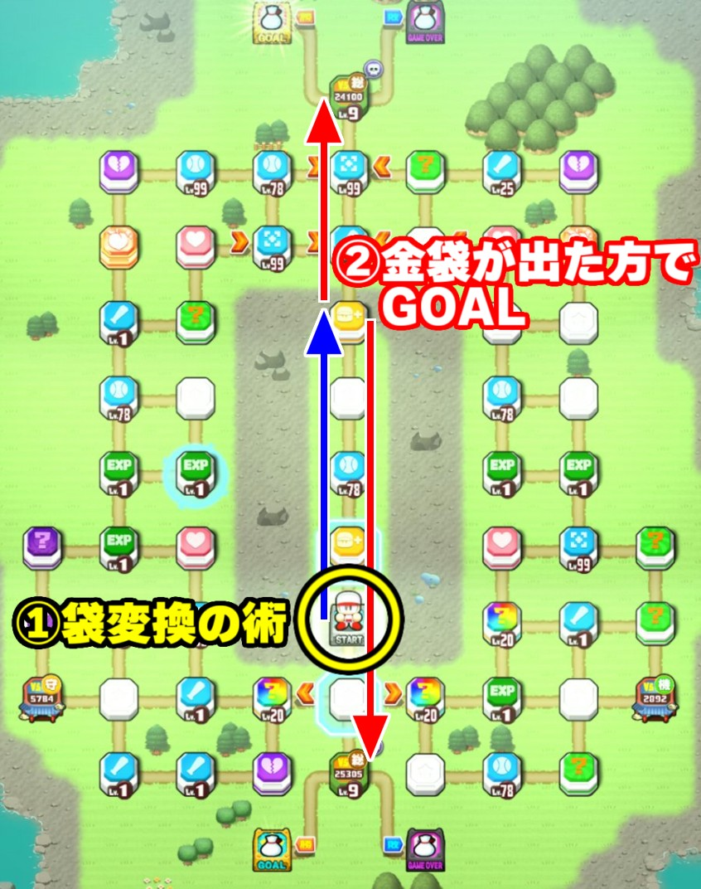
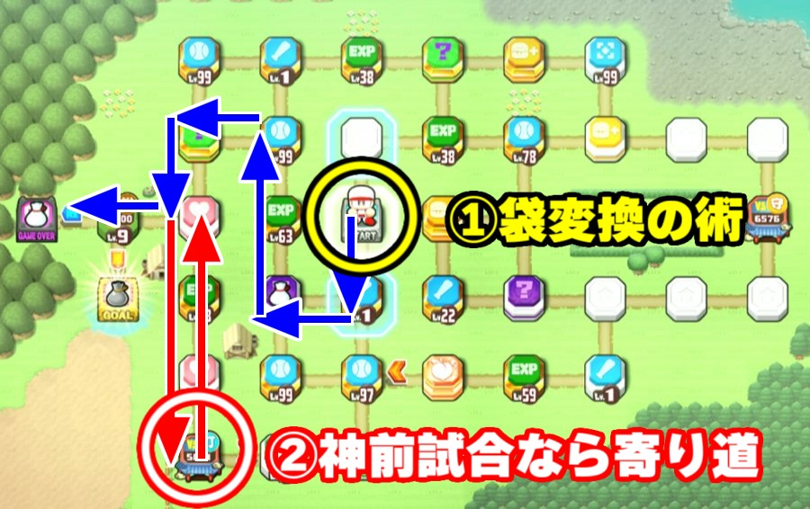
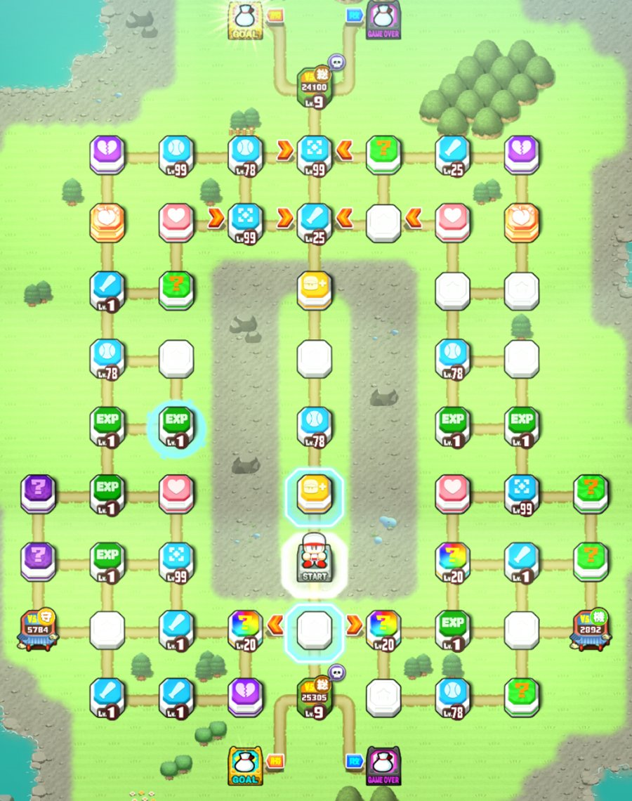

11/20 追記した内容
- 周回用にページレイアウトを変更
- 主にドロップするアイテムを追加
- 周回記録を追加
- 周回用ルートを追加
- 以前載せていた攻略情報を、じっくり攻略用ルート解説に移動
パワクエ 西球記
むずクエ攻略＆周回
パワクエ「西球記（さいきゅうき）」のむずクエを、エリアごとのルートと使う仙術で解説します。
主にドロップするアイテム
エリア2ボス戦勝利時に［最終兵器］虹谷誠の契約書が低確率でドロップするのが魅力のクエストです。エリア2ドロップなので祈願可能です。
高難度クエストなので、他の契約書コーチ+3以上も比較的狙いやすくなっています。
西球記専用アイテムもたまにドロップします。
エリア3のボスドロップは微妙なうえに祈願出来ないので、異世界のカバンを狙っていないのであればエリア2まで短縮ルートで攻略して、狙ったものが出なければ諦めるのが効率良いでしょう。
周回記録
※らんまコラボ期間中の記録なのでコラボ契約書のドロップが含まれます
周回記録 92周分 (うち、エリア2終了7回)（11/25時点）から集計しています。
総合練習の攻略本・秘伝書や○○の巻物など、有用性がないアイテムを記録対象外のアイテムとしています。
道中の契約書は、神前試合マスで獲得したものも含みます。
92周合計 (うち、エリア2終了7回)
| アイテム | 金 | 銀 | 銅 | 合計 |
|---|---|---|---|---|
| 投訓ノ書 | 3 | 9 | 1 | 13 |
| 空白ノ書 | 6 | 5 | - | 11 |
| 袋ノ書 | 5 | 4 | - | 9 |
| 野訓ノ書 | 2 | 7 | - | 9 |
| 呼び寄せの香 | 3 | 5 | - | 8 |
| 特能ノ書 | 5 | 3 | - | 8 |
| 幸運の金丹 | 4 | 3 | - | 7 |
| 金ノ書 | 1 | 5 | 1 | 7 |
| 呼応ノ書 | 1 | 4 | - | 5 |
| 野手特訓の秘伝書 | - | - | 2 | 2 |
| 異世界のカバン | - | 8 | 1 | 9 |
| 巨大リュック+ | 3 | 3 | 1 | 7 |
| 払拭のお札 | - | - | 1 | 1 |
| 契約書 | 68 | 108 | 241 | 417 |
コーチ人数+3以上が付いた契約書
| アイテム | 付いたスキル |
|---|---|
[野球マン3号]六道聖（金） 1周目エリア2 | コーチ人数+4 上限突破1 パワー特訓1 |
[わんこだよ！]パーちゃん（金） 3周目エリア3ボス | コーチ人数+3 肩力特訓1 |
[野球マン1号]早川あおい（銅） 5周目エリア2 | コーチ人数+3 |
松倉宗光（金） 12周目エリア1ボス | コーチ人数+4 |
[パワポケ]鋼毅（銀） 14周目エリア3ボス | コーチ人数+3 上限突破1 |
シャンプー（金） 15周目エリア2ボス | コーチ人数+3（祈願） 上限突破1 熟練の走塁1 |
響良牙（銀） 16周目エリア1ボス | コーチ人数+4（祈願） 熟練の投球1 |
野球マスク（金） 18周目エリア3ボス | コーチ人数+3 スタミナ特訓1 総合練習1 |
[最終兵器]虹谷誠（金） 20周目エリア2ボス | コーチ人数+3（祈願） スタミナ特訓1 総合練習1 |
[ムーンライト]橘みずき（銅） 27周目エリア3 | コーチ人数+4 球速特訓1 |
[野球マン2号]橘みずき（銅） 34周目エリア2 | コーチ人数+3 総合練習1 |
[求道者]才賀侑人（銅） 36周目エリア2 | コーチ人数+3 上限突破1（祈願） |
[秘密兵器]虹谷彩理（銀） 46周目エリア2ボス | コーチ人数+3 総合練習1 スタミナ特訓1 |
村雨（銅） 51周目エリア2 | コーチ人数+3 守備力特訓1（祈願） |
[求道者]才賀侑人（銅） 51周目エリア3 | コーチ人数+3 |
[ムーンライト]橘みずき（銀） 55周目エリア2 | コーチ人数+3 熟練の投球1 総合練習1 |
[パワポケ]鋼毅（金） 55周目エリア3ボス | コーチ人数+3 熟練の投球1 制球特訓 |
パーちゃん（銅） 57周目エリア1 | コーチ人数+4（祈願） |
天道あかね（金） 60周目エリア3ボス | コーチ人数+3 熟練の守備1 総合練習1 |
[求道者]才賀侑人（銅） 64周目エリア1 | コーチ人数+3 |
[野球マン1号]早川あおい（銅） 68周目エリア2 | コーチ人数+4（祈願） 熟練の投球1 |
[大筒]冴木創（銅） 71周目エリア1 | コーチ人数+3 ミート特訓1 上限突破1 |
シャンプー（金） 72周目エリア2ボス | コーチ人数+3（祈願） 熟練の守備1 捕球特訓1 |
[パワポケ]鋼毅（銀） 73周目エリア3ボス | コーチ人数+3 総合練習1 |
[再起の灯]戸内聖華（銅） 76周目エリア3 | コーチ人数+3 熟練の守備1 走力特訓2（祈願） |
[パワポケ]鋼毅（銀） 80周目エリア3ボス | コーチ人数+3 上限突破1 球速特訓1 |
[にゃんこです]ワーちゃん（銀） 82周目エリア3ボス | コーチ人数+3 熟練の守備1 |
[パワポケ]鋼毅（金） 89周目エリア3ボス | コーチ人数+3 上限突破1 球速特訓1 |
早乙女乱馬（銀） 92周目エリア2ボス | コーチ人数+4（祈願） スタミナ特訓1 |
優秀なスキルが付いたアイテム
| アイテム | 付いたスキル |
|---|---|
特能ノ書（金） 2周目エリア2ボス | 修練の術 特能 ミラクルマス強化2 5カード特殊能力 |
投訓ノ書（銀） 21周目エリア1ボス | 回復の術 投訓 祈願率UP2（祈願） |
野訓ノ書（銀） 30周目エリア2ボス | 回復の術 野訓 野手総合練人数+1 スカウト率UP1 |
野訓ノ書（金） 44周目エリア1ボス | 回復の術 野訓 パワー特訓人数+2 スカウト率UP2（祈願） |
呼応ノ書（銀） 57周目エリア2ボス | 呼応の術 ターンアップ2 変化球特訓人数+1 |
幸運の金丹（金） 61周目エリア3ボス | 祈願率UP3 初期強化2 ターンアップ1 |
呼び寄せの香（金） 64周目エリア1ボス | 契約書+1 マスプラス2 スカウト率UP1 |
野訓ノ書（銀） 69周目エリア2ボス | 回復の術 野訓 走力特訓人数+1 ターンアップ1 |
エリア毎の詳細はコチラをタップ
エリア1
エリア1道中
| アイテム | 金 | 銀 | 銅 | 合計 |
|---|---|---|---|---|
| 巨大リュック+ | - | - | 1 | 1 |
| 払拭のお札 | - | - | 1 | 1 |
| 異世界のカバン | - | - | 1 | 1 |
| 契約書 | 1 | 4 | 62 | 67 |
エリア1ボス
| アイテム | 金 | 銀 | 銅 | 合計 |
|---|---|---|---|---|
| 空白ノ書 | 4 | 3 | - | 7 |
| 投訓ノ書 | 2 | 4 | - | 6 |
| 幸運の金丹 | 2 | 1 | - | 3 |
| 金ノ書 | 1 | 1 | 1 | 3 |
| 呼び寄せの香 | 1 | 1 | - | 2 |
| 特能ノ書 | 1 | 1 | - | 2 |
| 野訓ノ書 | 1 | - | - | 1 |
| 異世界のカバン | - | 1 | - | 1 |
| 佐渡摩智の契約書 | 6 | 3 | - | 9 |
| 松倉宗光の契約書 | 5 | 1 | - | 6 |
| 天道あかねの契約書 | 1 | 4 | - | 5 |
| 早乙女乱馬の契約書 | - | 5 | - | 5 |
| ササエルの契約書 | 4 | - | - | 4 |
| シュバリエの契約書 | 1 | 3 | - | 4 |
| パワ子の契約書 | 2 | 2 | - | 4 |
| 宮田良哉の契約書 | 3 | 1 | - | 4 |
| 西矢田来一の契約書 | 1 | 3 | - | 4 |
| 響良牙の契約書 | - | 4 | - | 4 |
| シャンプーの契約書 | 2 | 1 | - | 3 |
| 佐渡至皇理の契約書 | 2 | 1 | - | 3 |
| 高木幸子の契約書 | 2 | 1 | - | 3 |
| キリル・フォスターの契約書 | 1 | 1 | - | 2 |
| 曙緋緒の契約書 | 2 | - | - | 2 |
| 海野朋の契約書 | 1 | 1 | - | 2 |
| D:LIVEの契約書 | - | 1 | - | 1 |
| ケヒャールの契約書 | - | 1 | - | 1 |
| ボスドロップなし | - | - | - | 1 |
コーチ人数+3・+4が付いた契約書
| アイテム | 付いたスキル |
|---|---|
松倉宗光（金） 12周目エリア1ボス | コーチ人数+4 |
響良牙（銀） 16周目エリア1ボス | コーチ人数+4（祈願） 熟練の投球1 |
パーちゃん（銅） 57周目エリア1 | コーチ人数+4（祈願） |
[求道者]才賀侑人（銅） 64周目エリア1 | コーチ人数+3 |
[大筒]冴木創（銅） 71周目エリア1 | コーチ人数+3 ミート特訓1 上限突破1 |
エリア2
エリア2道中
| アイテム | 金 | 銀 | 銅 | 合計 |
|---|---|---|---|---|
| 野手特訓の秘伝書 | - | - | 1 | 1 |
| 契約書 | 3 | 14 | 92 | 109 |
エリア2ボス
| アイテム | 金 | 銀 | 銅 | 合計 |
|---|---|---|---|---|
| 呼び寄せの香 | 2 | 4 | - | 6 |
| 投訓ノ書 | 1 | 4 | 1 | 6 |
| 野訓ノ書 | 1 | 5 | - | 6 |
| 袋ノ書 | 3 | 2 | - | 5 |
| 空白ノ書 | 2 | 2 | - | 4 |
| 呼応ノ書 | 1 | 2 | - | 3 |
| 幸運の金丹 | 1 | 2 | - | 3 |
| 金ノ書 | - | 3 | - | 3 |
| 特能ノ書 | 1 | - | - | 1 |
| 巨大リュック+ | 2 | 2 | - | 4 |
| 異世界のカバン | - | 2 | - | 2 |
| [秘密兵器]虹谷彩理の契約書 | - | 3 | - | 3 |
| [最終兵器]虹谷誠の契約書 | 1 | - | - | 1 |
| [猫かぶり]大空美代子の契約書 | - | - | 1 | 1 |
| ランスロットの契約書 | 1 | 7 | - | 8 |
| 神成尊の契約書 | 1 | 7 | - | 8 |
| 東雲翔也の契約書 | 4 | 3 | - | 7 |
| 虹谷誠の契約書 | 3 | 4 | - | 7 |
| シャンプーの契約書 | 2 | 3 | - | 5 |
| 早乙女乱馬の契約書 | 1 | 2 | - | 3 |
| 響良牙の契約書 | - | 2 | - | 2 |
| 天道あかねの契約書 | 1 | - | - | 1 |
| 記録対象外のアイテム | - | - | - | 2 |
| ボスドロップなし | - | - | - | 1 |
コーチ人数+3・+4が付いた契約書
| アイテム | 付いたスキル |
|---|---|
[野球マン3号]六道聖（金） 1周目エリア2 | コーチ人数+4 上限突破1 パワー特訓1 |
[野球マン1号]早川あおい（銅） 5周目エリア2 | コーチ人数+3 |
シャンプー（金） 15周目エリア2ボス | コーチ人数+3（祈願） 上限突破1 熟練の走塁1 |
[最終兵器]虹谷誠（金） 20周目エリア2ボス | コーチ人数+3（祈願） スタミナ特訓1 総合練習1 |
[野球マン2号]橘みずき（銅） 34周目エリア2 | コーチ人数+3 総合練習1 |
[求道者]才賀侑人（銅） 36周目エリア2 | コーチ人数+3 上限突破1（祈願） |
[秘密兵器]虹谷彩理（銀） 46周目エリア2ボス | コーチ人数+3 総合練習1 スタミナ特訓1 |
村雨（銅） 51周目エリア2 | コーチ人数+3 守備力特訓1（祈願） |
[ムーンライト]橘みずき（銀） 55周目エリア2 | コーチ人数+3 熟練の投球1 総合練習1 |
[野球マン1号]早川あおい（銅） 68周目エリア2 | コーチ人数+4（祈願） 熟練の投球1 |
シャンプー（金） 72周目エリア2ボス | コーチ人数+3（祈願） 熟練の守備1 捕球特訓1 |
早乙女乱馬（銀） 92周目エリア2ボス | コーチ人数+4（祈願） スタミナ特訓1 |
エリア3
エリア3道中
| アイテム | 金 | 銀 | 銅 | 合計 |
|---|---|---|---|---|
| 野手特訓の秘伝書 | - | - | 1 | 1 |
| 契約書 | 2 | 7 | 85 | 94 |
エリア3ボス
| アイテム | 金 | 銀 | 銅 | 合計 |
|---|---|---|---|---|
| 特能ノ書 | 3 | 2 | - | 5 |
| 袋ノ書 | 2 | 2 | - | 4 |
| 呼応ノ書 | - | 2 | - | 2 |
| 野訓ノ書 | - | 2 | - | 2 |
| 幸運の金丹 | 1 | - | - | 1 |
| 投訓ノ書 | - | 1 | - | 1 |
| 金ノ書 | - | 1 | - | 1 |
| 異世界のカバン | - | 5 | - | 5 |
| 巨大リュック+ | 1 | 1 | - | 2 |
| [パワポケ]鋼毅の契約書 | 3 | 6 | - | 9 |
| [にゃんこです]ワーちゃんの契約書 | 2 | 3 | - | 5 |
| [わんこだよ！]パーちゃんの契約書 | 2 | 2 | - | 4 |
| 野球マスクの契約書 | 3 | 2 | - | 5 |
| シャンプーの契約書 | 1 | 2 | - | 3 |
| 天道あかねの契約書 | 2 | 1 | - | 3 |
| アフロ猪狩の契約書 | 1 | 1 | - | 2 |
| 響良牙の契約書 | 1 | 1 | - | 2 |
| 早乙女乱馬の契約書 | - | 1 | - | 1 |
| 獅乃木琢磨の契約書 | - | - | 1 | 1 |
| ボスドロップなし（祈願） | - | - | - | 27 |
コーチ人数+3・+4が付いた契約書
| アイテム | 付いたスキル |
|---|---|
[わんこだよ！]パーちゃん（金） 3周目エリア3ボス | コーチ人数+3 肩力特訓1 |
[パワポケ]鋼毅（銀） 14周目エリア3ボス | コーチ人数+3 上限突破1 |
野球マスク（金） 18周目エリア3ボス | コーチ人数+3 スタミナ特訓1 総合練習1 |
[ムーンライト]橘みずき（銅） 27周目エリア3 | コーチ人数+4 球速特訓1 |
[求道者]才賀侑人（銅） 51周目エリア3 | コーチ人数+3 |
[パワポケ]鋼毅（金） 55周目エリア3ボス | コーチ人数+3 熟練の投球1 制球特訓 |
天道あかね（金） 60周目エリア3ボス | コーチ人数+3 熟練の守備1 総合練習1 |
[パワポケ]鋼毅（銀） 73周目エリア3ボス | コーチ人数+3 総合練習1 |
[再起の灯]戸内聖華（銅） 76周目エリア3 | コーチ人数+3 熟練の守備1 走力特訓2（祈願） |
[パワポケ]鋼毅（銀） 80周目エリア3ボス | コーチ人数+3 上限突破1 球速特訓1 |
[にゃんこです]ワーちゃん（銀） 82周目エリア3ボス | コーチ人数+3 熟練の守備1 |
[パワポケ]鋼毅（金） 89周目エリア3ボス | コーチ人数+3 上限突破1 球速特訓1 |
祈願の記録
24回中、成功15回・失敗9回。
| アイテム | 結果 | 付いたスキル |
|---|---|---|
| 松倉宗光 | 失敗 | - |
| シャンプー | 成功 | コーチ人数+3 |
| 響良牙 | 成功 | コーチ人数+4 |
| [最終兵器]虹谷誠 | 成功 | コーチ人数+3 |
| 投訓ノ書 | 成功 | 祈願率UP2 |
| 神成尊 | 成功 | コーチ人数+2 |
| 空白ノ書 | 失敗 | - |
| [ムーンライト]橘みずき | 失敗 | - |
| 野訓ノ書 | 失敗 | - |
| 投訓ノ書 | 失敗 | - |
| [求道者]才賀侑人 | 成功 | 上限突破1 |
| 野訓ノ書 | 成功 | スカウト率UP2 |
| [秘密兵器]虹谷彩理 | 失敗 | - |
| 村雨 | 成功 | 守備力特訓1 |
| 袋ノ書 | 成功 | 特能マス強化1 |
| 袋ノ書 | 失敗 | - |
| パーちゃん | 成功 | コーチ人数+4 |
| [クール！]小平陽向 | 失敗 | - |
| [野球マン1号]早川あおい | 成功 | コーチ人数+4 |
| 野訓ノ書 | 失敗 | - |
| シャンプー | 成功 | コーチ人数+3 |
| [再起の灯]戸内聖華 | 成功 | 走力特訓2 |
| [クール！]小平陽向 | 成功 | パワー特訓1 |
| 早乙女乱馬 | 成功 | コーチ人数+4 |
周回用ルート
エリア1

クエスト開始時に袋変換の術を発動します。スタート上部のスカウトマスを通ってチームを強化し、その後は金袋がある方のゴールを目指します。金袋がなければそのまま上ゴールで構いません。
左右ルートに金・銀袋があったり、神前試合でのドロップも狙いたい場合は、じっくり攻略ルートで時間をかけるのもアリです。
じっくり攻略ルートはページ下部に記載しています。
エリア2

クエスト開始時に袋変換の術を発動して、真っ先にゴールを目指します。左下のマスが神前試合マスであれば寄り道してもOKです。
右ルートへの寄り道はほぼ不可能です。
エリア1を最短でクリアした場合は20ターン以上残ってるので、少しなら寄り道も可能です。道中に袋が落ちている場合は拾ってゴール狙いましょう。
エリア3

左は通常ゴール、右は祈願です。
10ターン残っていれば、右の神前試合マスに行きながら左の通常ゴールに行く事も可能です。
じっくり攻略用ルート解説
タップして詳細を開く
マップの形は固定です。マスの種類は毎回変化しますが、ある程度法則があります。
デッキ必須アイテム
【ターンアップのスキルが付いたアイテム】
エリア1を満遍なく探索するには20ターン以上必要になるので、ターンアップが付いたアイテムは必須です。
専用アイテムだと袋ノ書に付くのを確認済みです。また、その他に分類されるアイテムに付きやすいです。
【金ノ書】
エリア2を満遍なく探索するには、回復の術 金と錬金の術によるコンボでターン回復が必須になります。持ち込みましょう！
エリア1

中央下の位置からスタート固定です。
スカウトマスがスタート位置の上にありますが、上からは神前試合のルートに入ることが出来ず、折り返して下から行かなければいけません。
スタート上のスカウトマスを踏みながら神前試合マスも通る場合、必然的に空白マスを多く通る事になるので、回復の術 空白を最初に使うのがオススメです。
回復の術 空白は、エリア2でも有効に働きます。
画像のようにスカウトマスを通って折り返し、左ルートへ進んだ場合は29ターンかかります。途中で回復マスが2回ありますがそれでもターンが足りないので、「ターンアップ」のスキルと、回復の術の発動が必須になります。
右ルートの方は直線的に移動できない場所があり、2ターン多く必要になるので注意が必要です。
桃マスでは、次のエリアに向けて回復の術 金を発動しましょう。
発動には金ノ書が必要になります。
エリア2

画面中央スタートです。
最初に錬金の術を発動しましょう。エリア1で使った回復の術 金と合わせて、ターンを回復しながら進めるようになります。
右ルートを時計回りに回ったあと、左上→左下と移動する事で神前試合マスと桃マスの両方を回収可能です。
桃マスで袋変換の術を使い、ゴールマスのレアリティを上げましょう。
エリア3
左は通常ゴール、右は祈願です。
エリア2で金マスをしっかり踏めていれば、余裕を持ってどちらに行くことも可能です。
西球記の攻略ページ
 重要アイテム一覧※11/25更新!
重要アイテム一覧※11/25更新!
 神前試合まとめ※11/26更新!38校の進化対象・
神前試合まとめ※11/26更新!38校の進化対象・ 虹特の査定まとめ※11/24更新!17種類の査定と
虹特の査定まとめ※11/24更新!17種類の査定と おすすめ契約書&コーチ+4厳選解説※11/26更新!狙い方と
おすすめ契約書&コーチ+4厳選解説※11/26更新!狙い方と ミッション報酬西球記の105件を
ミッション報酬西球記の105件を西球記のクエスト・周回ページ
 クエスト一覧※11/25更新!①〜⑳・むずクエ・むちゃクエの
クエスト一覧※11/25更新!①〜⑳・むずクエ・むちゃクエの ⑫旅は続く周回※11/24更新!
⑫旅は続く周回※11/24更新!
 ⑱道中2周回※11/25更新!
⑱道中2周回※11/25更新!
 ⑲道中3周回※11/25更新!
⑲道中3周回※11/25更新!
 むずクエ攻略＆周回※11/25更新!エリアごとの
むずクエ攻略＆周回※11/25更新!エリアごとの西球記の攻略（トップ）に戻る